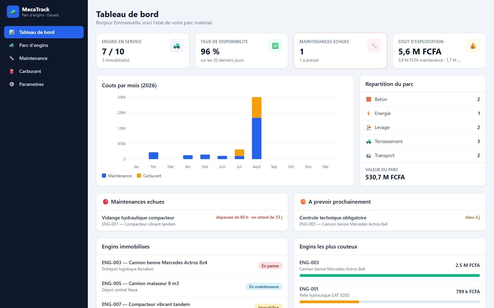

DÉMO EN LIGNEMecaTrack — GMAO d'un parc d'engins
Gestion de maintenance assistée par ordinateur pour une entreprise de BTP : suivi des engins, maintenance préventive déclenchée automatiquement au compteur horaire ou au calendrier, pannes et immobilisations, carburant et coût de possession. Authentification JWT à trois rôles, QR code par engin, exports CSV et 11 tests Django sur les règles métier.
Stack